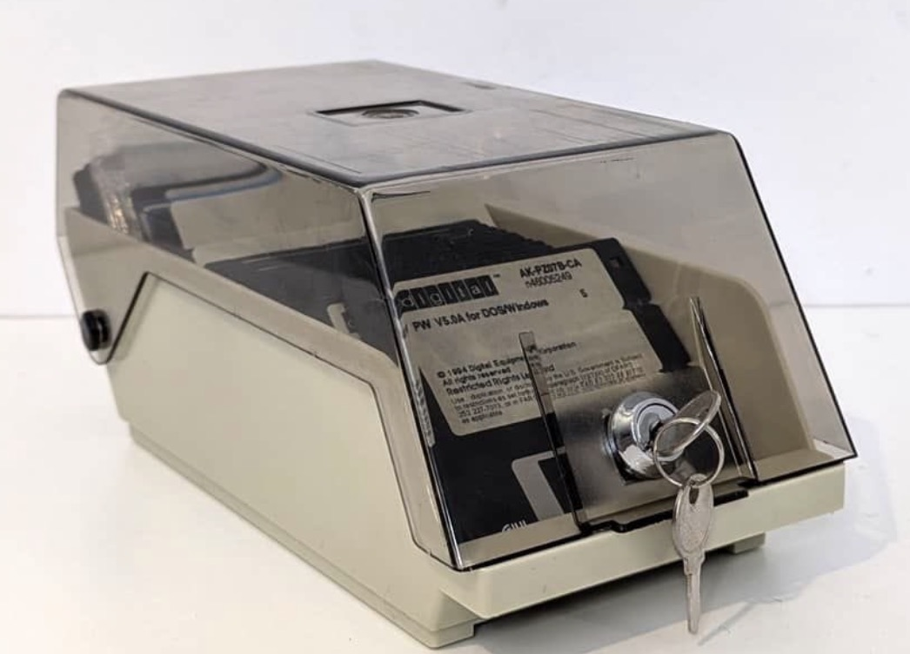

Tiedon vanheneminen
1. heinäkuuta 2026 · Risto Anton Päärni · Espoo, Suomi

Tekoälystä puhutaan paljon. Keskustelu keskittyy usein malleihin, agentteihin, hallusinaatioihin ja sääntelyyn.
Käytännön työssä vastaan tulee kuitenkin toinen havainto: tekoäly käyttää sitä tietoa, joka organisaatiolla jo on.
Tekoäly ei luo tiedonhallinnan ongelmaa. Se tekee sen näkyväksi.
Tärkeää on huomata, että itse tieto ei välttämättä ole ongelma. Esimerkiksi 131 188 henkilötunnusta sisältävä tiedosto ei vielä itsessään ole löydös. Löydös syntyy silloin, jos tiedot sijaitsevat väärässä paikassa, niitä säilytetään pidempään kuin on tarpeen, niiden omistajuus on epäselvä tai niihin on pääsy henkilöillä, joilla ei siihen pitäisi olla oikeutta.
Käytännössä kyse on siis useammin tiedonhallinnan kuin tiedon olemassaolon ongelmasta. Jos lähdetieto on vanhentunutta, hajanaista tai heikkolaatuista, myös tekoälyn tuottamat vastaukset kärsivät. Vanha IT-maailman sanonta pätee edelleen: garbage in, garbage out.
Ja se koskee myös meidän omaa tuotettamme
Ja koska pelkkä havainto ei ole vielä bisnes, tässä on rehellinen osa: sama riski koskee Lifetime Oy:tä heti, kun Control Room ja Situation Room alkavat vastaanottaa jatkuvaa sensorivirtaa asiakkaan tiloista — tuotantolinjan antureita, päästömittareita, kamerakuvaa, IoT-telemetriaa.
Jos emme määritä eksplisiittistä tallennusstrategiaa, rakennamme asiakkaalle juuri sen ongelman, jota olemme myymässä ratkaisuna. Sama peili, joka näyttää asiakkaan tiedonhallinnan todellisen tilan, näyttäisi meidän omamme.
Joten kirjoitimme sen auki. Neljä kerrosta, kukin oma vanhenemisikä ja pääsyoikeustaso:
| Kerros | Sisältö | Säilytys |
|---|---|---|
| 1 · Raaka sensorivirta | Anturisignaali sellaisenaan | 72 tuntia, paikallislevy |
| 2 · Ontologisoitu tiivistelmä | LWM-tapahtuma, ei enää raakadataa | 13 kuukautta |
| 3 · Compliance-audit-jälki | Article 12 -lokitus, hash-ketjutettu | 7 vuotta, muuttumaton |
| 4 · Situation Room -koonti | Toimialatason aggregaatti, ei yksilöityä dataa | 24 kuukautta, liukuva ikkuna |
Raaka data ei koskaan siirry kerroksesta 1 Situation Roomiin. Situation Room ei koskaan näe yksilöityä dataa. Ja kaksi kysymystä ratkaistaan käyttöönotossa, ei jälkikäteen: kuka omistaa minkäkin ontologiasolmun, ja kuka pääsee mihinkin kerrokseen. Pääsyoikeudet tarkistetaan neljännesvuosittain — ei kertaluonteisena päätöksenä, joka jää elämään käyttämättömänä vuosia.
Mitä tämä ei tarkoita
Se ei tarkoita, että säilyttäisimme vähemmän kuin sääntely vaatii. EU:n tekoälyasetuksen 12 artikla edellyttää 7 vuoden auditointijälkeä — sitä emme lyhennä koskaan. Kaksikäyttö- ja turvaluokitellun datan (Aegis Defence) osalta emme myöskään aseta ylärajaa; asiakkaan oma turvaluokitus määrää. Tiukkuus koskee juuri sitä dataa, jolla ei ole eksplisiittistä käyttötarvetta viikon jälkeen.
Kaksi kysymystä, jotka jokaisen tiedonhallinnan, tietosuojan, tietoturvan tai digitaalisen kehittämisen parissa työskentelevän kannattaa kysyä omasta ympäristöstään: kuka pääsee käsiksi tietoon, ja voiko tiedon laatuun luottaa? AI on usein vain peili. Se näyttää tiedonhallinnan todellisen tilanteen — riippumatta siitä, katsooko peiliin asiakas vai toimittaja.
Lyhyesti
- Tekoäly ei luo tiedonhallinnan ongelmaa. Se tekee sen näkyväksi.
- Löydös ei ole tiedon olemassaolo — löydös on tieto väärässä paikassa, väärän ikäisenä, ilman omistajaa.
- Control Room / Situation Room: neljä kerrosta, jokaisella oma vanhenemisikä (72h / 13kk / 7v / 24kk).
- Omistajuus ja pääsyoikeudet ratkaistaan käyttöönotossa, tarkistetaan neljännesvuosittain.
- Kaksi kysymystä riittää: kuka pääsee käsiksi tietoon, ja voiko sen laatuun luottaa?
Olemme käynnistäneet kumppanimme kanssa kansainvälisen, riippumattoman ja ei-kaupallisen tutkimuksen rakenteettoman tiedon, tiedonhallinnan ja tekoälyn riskeistä. Ei markkinointilistoja, ei myyntipuheluita. Tulokset julkaistaan ennen syyskuun 2026 loppua.
Lue seuraavaksi
- Don't Point the LLM at the Data — Point It at the Ontology
- Kolmiosainen silmukka valvomoille — Lifetime World Model V1
- Ontologia elää tiimin aivoissa
- Mallisi ei voita kohinatasoasi
Risto Anton Päärni — toimitusjohtaja, Lifetime Oy · päätoimittaja, Lifetime
Scope Journal.
Käsikirjoituksen tekninen liite:
docs/field-notes/2026-07-01-tiedon-vanheneminen-sensoridata-retention-control-room.md. Retention-malli on sama sekä asiakkaan Control Room -laitteistolla että meidän omassa
Admin Manualissamme — sama kuri, sama peili.
Lähde ja kansallinen viitekehys: Valtiovarainministeriö, "Kriittinen infrastruktuuri ja avoin tieto — Opas turvallisuuslähtöiseen tiedonhallintaan," Valtiovarainministeriön julkaisuja 2026:27, 17.6.2026 (ISBN PDF 978-952-367-188-1, urn.fi/URN:ISBN:978-952-367-188-1). Opas nimeää kasautumisvaikutuksen (kasaumavaikutus) kansallisen tason arviointikriteeriksi — sama periaate, jonka varaan yllä kuvattu nelikerroksinen retention-malli rakentuu.